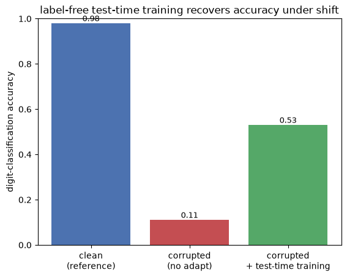

A second companion to NL-1, for when the random key/value toy (where the self-supervised error comes from) feels abstract. This is the original Test-Time Training (Sun, Wang, Liu, Miller, Efros & Hardt, ICML 2020), the image-classification ancestor of NL-1’s sequence TTT. The lineage is literal, not just conceptual: Yu Sun is first author on both, five years apart. Here you can watch “where does the self-supervised error come from?” play out on real digits.
Runs on CPU in a couple of minutes, with a one-time ~11 MB MNIST download (cached locally).
The trick, in one breath: take a digit image, rotate it by 0°/90°/180°/270° yourself, and train the network to predict which rotation you applied. The rotation is a free label you manufactured from the image — no human annotation. At test time, on weird/corrupted images, the network adapts its features by getting better at that rotation task — using no class labels at all — and its digit-recognition accuracy recovers.
Two heads on a shared trunk: classification (outer loss, real labels, training only) and rotation (inner loss, self-supervised, runs at test time).
1. The data and the self-supervised task
MNIST digits. The classification label (which digit) is the outer supervision — used only in training. The rotation label is self-supervised: we rotate each image by a known multiple of 90° and the angle index 0,1,2,3 is the target.
import gzipimport osimport urllib.requestimport matplotlib.pyplot as pltimport numpy as npimport torchimport torch.nn as nnimport torch.nn.functional as Fdef prepare_mnist(): root = os.path.expanduser("~/.cache/cl-course-data") os.makedirs(root, exist_ok=True) base ="https://ossci-datasets.s3.amazonaws.com/mnist/" files = {"trX": "train-images-idx3-ubyte.gz","trY": "train-labels-idx1-ubyte.gz","teX": "t10k-images-idx3-ubyte.gz","teY": "t10k-labels-idx1-ubyte.gz", }def load(fn, img): p = os.path.join(root, fn)ifnot os.path.exists(p):print("downloading", fn, "(one time)...") urllib.request.urlretrieve(base + fn, p)with gzip.open(p, "rb") as f: d = f.read()return ( np.frombuffer(d, np.uint8, offset=16).reshape(-1, 28, 28) if img else np.frombuffer(d, np.uint8, offset=8) )return (load(files["trX"], 1), load(files["trY"], 0), load(files["teX"], 1), load(files["teY"], 0))trXn, trYn, teXn, teYn = prepare_mnist()torch.manual_seed(0)trX = torch.tensor(trXn /255.0, dtype=torch.float32)trY = torch.tensor(trYn.copy(), dtype=torch.long)teX = torch.tensor(teXn /255.0, dtype=torch.float32)teY = torch.tensor(teYn.copy(), dtype=torch.long)tr = torch.randperm(len(trX))[:12000]trX, trY = trX[tr], trY[tr] # subsample for CPU speedte = torch.randperm(len(teX))[:2000]teX, teY = teX[te], teY[te]print("MNIST:", tuple(trX.shape), "train /", tuple(teX.shape), "test")# the self-supervised task: predict which rotation was applied (the angle is the label)img = teX[1]fig, ax = plt.subplots(1, 4, figsize=(7, 2))for k inrange(4): ax[k].imshow(torch.rot90(img, k, [0, 1]), cmap="gray_r") ax[k].axis("off") ax[k].set_title(f"rotation label = {k}\n({k *90} deg)", fontsize=8)fig.suptitle("self-supervised task: predict the rotation we applied (a free label, no annotator)", y=1.12, fontsize=9)plt.show()
A shared convolutional trunk feeds two linear heads:
classification head — trained on the real digit labels (the outer, supervised loss);
rotation head — trained to predict the rotation of a rotated copy (the inner, self-supervised loss).
Both losses train the shared trunk, so the trunk learns features that serve recognition and are sensitive to image orientation. That shared trunk is what test-time adaptation will later tune.
class Net(nn.Module):def__init__(self):super().__init__()self.trunk = nn.Sequential( nn.Conv2d(1, 16, 3, padding=1), nn.BatchNorm2d(16), nn.ReLU(), nn.MaxPool2d(2), # 14x14 nn.Conv2d(16, 32, 3, padding=1), nn.BatchNorm2d(32), nn.ReLU(), nn.MaxPool2d(2), # 7x7 nn.Flatten(), nn.Linear(32*7*7, 64), nn.BatchNorm1d(64), nn.ReLU(), )self.cls = nn.Linear(64, 10) # outer head (digit) -- needs labelsself.rot = nn.Linear(64, 4) # inner head (rotation) -- self-superviseddef feat(self, x):returnself.trunk(x.unsqueeze(1))def rot_batch(x): # 4 rotations of each image; the angle index is the label xs = [x] + [torch.rot90(x, k, [1, 2]) for k in (1, 2, 3)]return torch.cat(xs), torch.cat([torch.full((len(x),), k) for k inrange(4)])torch.manual_seed(0)net = Net()opt = torch.optim.Adam(net.parameters(), 1e-3)for epoch inrange(3): net.train()for i inrange(0, len(trX), 128): xb, yb = trX[i : i +128], trY[i : i +128] cls_loss = F.cross_entropy(net.cls(net.feat(xb)), yb) # OUTER: real digit labels rx, ry = rot_batch(xb) rot_loss = F.cross_entropy(net.rot(net.feat(rx)), ry) # INNER: self-supervised rotation opt.zero_grad() (cls_loss + rot_loss).backward() opt.step()def accuracy(model, X, Y): model.eval()with torch.no_grad(): preds = torch.cat([model.cls(model.feat(X[i : i +256])).argmax(1) for i inrange(0, len(X), 256)])return (preds == Y).float().mean().item()clean_acc = accuracy(net, teX, teY)print(f"clean test accuracy: {clean_acc:.3f}")
clean test accuracy: 0.979
3. A distribution shift breaks it
Now the test images are corrupted — heavy noise the model never saw in training (a stand-in for the real-world shifts TTT was built for: blur, weather, sensor noise…). The features no longer match what the classifier expects, and accuracy collapses toward chance.
clean accuracy 0.979 -> corrupted accuracy 0.110 (no adaptation)
4. Test-time training: fix it with no labels
Here is the whole point. We adapt the network on the corrupted test images themselves, by gradient descent on the rotation loss only — rotating each corrupted image and predicting the angle. We never touch the digit labels. Improving the self-supervised task pulls the shared trunk’s features back into a sensible range for this corrupted distribution, and the (untouched) classification head rides along — its accuracy recovers.
The error signal at test time is manufactured from the data (the rotations we applied), exactly as in NL-1 §1’s reconstruction loss.
import copyadapted = copy.deepcopy(net)opt_t = torch.optim.Adam(adapted.parameters(), 1e-3)for epoch inrange(3): adapted.train()for i inrange(0, len(teXc), 128): rx, ry = rot_batch(teXc[i : i +128]) # rotations of CORRUPTED test images loss = F.cross_entropy(adapted.rot(adapted.feat(rx)), ry) # self-supervised: NO digit labels opt_t.zero_grad() loss.backward() opt_t.step()ttt_acc = accuracy(adapted, teXc, teY)labels = ["clean\n(reference)", "corrupted\n(no adapt)", "corrupted\n+ test-time training"]vals = [clean_acc, corrupted_acc, ttt_acc]plt.bar(labels, vals, color=["#4c72b0", "#c44e52", "#55a868"])for i, v inenumerate(vals): plt.text(i, v +0.01, f"{v:.2f}", ha="center", fontsize=9)plt.ylabel("digit-classification accuracy")plt.ylim(0, 1)plt.title("label-free test-time training recovers accuracy under shift")plt.show()print(f"corrupted {corrupted_acc:.3f} -> after test-time training {ttt_acc:.3f} "f"(+{ttt_acc - corrupted_acc:.2f}, using zero class labels)")

corrupted 0.110 -> after test-time training 0.530 (+0.42, using zero class labels)
So where did the error come from? (tangible version)
Inner loss: self-supervised, no labels, runs at test time. Predict the rotation we applied. The target is made from the image (we chose the angle), so it needs no annotation. This is what adapted the network to the corrupted images.
Outer loss: supervised, labels, training only. Digit classification. During training it shaped the shared trunk so that getting better at rotation also keeps features good for classification. That alignment is what makes the label-free inner loop useful. (With a random trunk, adapting the rotation task would do nothing for classification — same lesson as §A of the other aside.)
So it’s meta-learning: the outer loop (labels, training) configures a self-supervised inner loop so that at test time the inner loop alone, no labels, can adapt the model to new, shifted data. This is the same idea as NL-1’s sequence TTT; the only change is the form of the self-supervised loss (predict-the-rotation here, reconstruct-a-token-view there). At test time the error signal comes entirely from the rotations we manufactured.